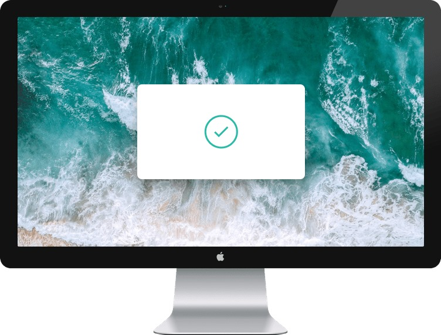

A HISTORY OF EVERYTHING YOU COPY
Clipboard allows you to track and organize everything you copy instantly access your clipboard on all your devices.
Access Clipboard anywhere
Whether you are on the go,or at your computer, you can access all your clipboard snippets in a few simple clicks
Keep track of your snippets
Clipboard instantly stores any item you copy in the cloud, meaing you can access your snippets immediately on all your devices, our Mac and IOS apps will help you organize everything
